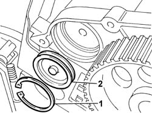

1036L52 EXHAUST CAMSHAFT FRONT SEAL IN CAMSHAFT HOUSING - REPLACE
- Path
- Procedures > 10 ENGINE UNIT > 1036 TIMING SYSTEM > 1036L CAMSHAFT (2) IN TOP HEAD (1) > 1036L52 EXHAUST CAMSHAFT FRONT SEAL IN CAMSHAFT HOUSING - REPLACE
- Kind
- repair procedure (removal / refitting; the operation number is the code)
- Applies to
- engines: 2.3 JTD 16V; all production periods
- Interactive page
- https://sloeber94.github.io/elrnDB-fDct/en/#/244000731
Applies to: engines: 2.3 JTD 16V; all production periods
 Removing
Removing
 Refitting
RefittingOp. 7055B54 UNDER-ENGINE GUARD - R R
Op. 4450B04 RIGHT FRONT WHEEL R R
Op. 1092B72 POWER STEERING PUMP DRIVE BELT - ALTERNATOR - R&R
Op. 1092A10 CRANKSHAFT SERVICES PULLEY - R.R.
Op. 1032D12 TIMING SYSTEM PROTECTIVE COVER(S) - R + R
1. Remove the circlip.
2. Remove the exhaust shaft front sealing plug.

Applies to: engines: 2.3 JTD 16V; all production periods
Refitting
Removing- Replace the O-RING oil seal on the front sealing plug.
- Refit the front sealing plug and fasten it in the housing using the circlip.
Op. 1032D12 TIMING SYSTEM PROTECTIVE COVER(S) - R + R
Op. 1092A10 CRANKSHAFT SERVICES PULLEY - R.R.
Op. 1092B72 POWER STEERING PUMP DRIVE BELT - ALTERNATOR - R&R
Op. 4450B04 RIGHT FRONT WHEEL R R